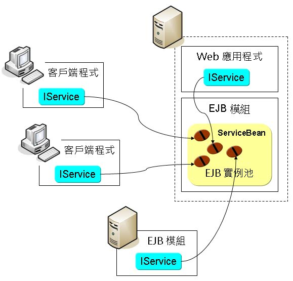
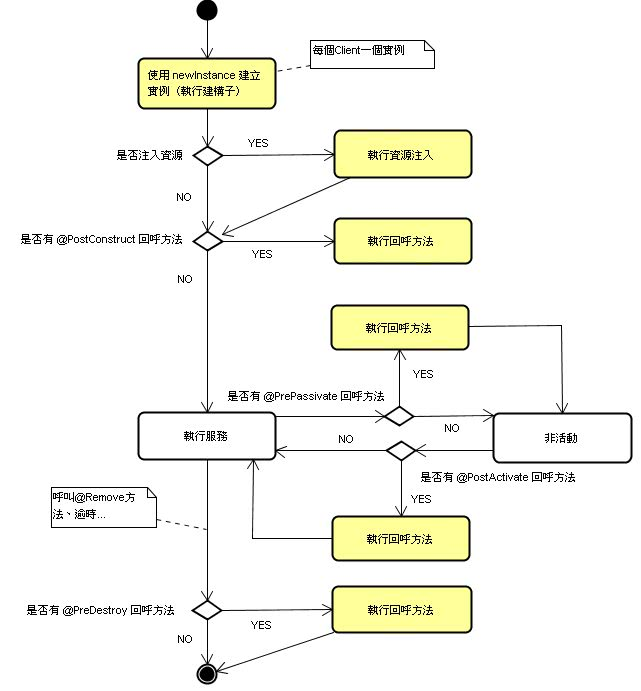

Stateful Session Bean可用來維繫客戶端的會話狀態，在會話持續期間，EJB容器會為每個客戶端維持一個Bean實例，直到被標註為@Remove的方法被呼叫，或是等待逾時而將Bean移除。
下圖示意兩個客戶端、伺服端Web應用程式與另一個EJB模組，透過IService存取Stateful Session Bean的情況，每個要求使用服務的客戶端，都會取得一個Bean實例：

由於Stateful Session Bean為每個客戶端維持一個實例，在眾多客戶端使用服務的情況下，EJB容器中會有眾多的Bean實例，為了有效運用系統資源，EJB容器可以決定將暫 時未活動的Bean實例從容器中解除（deactivate），像是透過序列化儲存在永久性儲存媒介中，這稱之為Passivate，當客戶端要求時，再 將該Bean啟用（activate），這稱之為Activate。
您可以使用@PrePassivate與@PostActivate標註某方法為回呼方法，當Passivate前，會呼叫被標註為@PrePassivate的方法，而當Activate後，會呼叫標註為@PostActivate的方法。
對於Stateful Session Bean，也可使用@PostConstruct標註某個方法，則在Bean被建構之後，容器就會呼叫該回呼（callback）方法，如果有資源需要 注入，則容器是在注入資源之後，再呼叫被@PostConstruct標註的方法。
您可以使用@PreDestroy標注某個方法，在Bean被銷毀前（像是逾期的Bean，或呼叫@Remove方法後將被移除的Bean實例），容器會 呼叫該回呼方法。若是一個被Passivate的Bean決定被銷毀，它會先被Activate（所以會呼叫@Activate回呼方法），接著再呼叫 @PreDestroy回呼方法。
下圖為Stateful Session Bean的生命週期示意圖：
